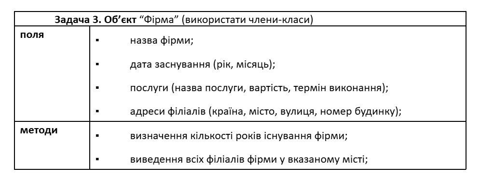
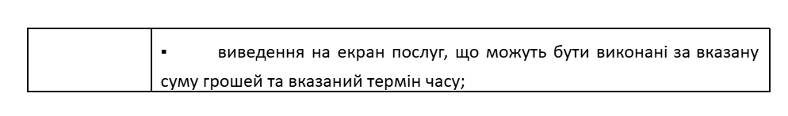

В усіх задача повинен бути toString!!!
Клас із полями #weight і #items. Дозвольте додавати предмети, якщо вага не перевищує 10 кг.
Клас із полями #stock (масив з товарами (назва, кількість)) і #revenue. Дозвольте продавати товар, якщо є запас.
Клас із полями #ingredients і #orders. Замовлення можливі, якщо є інгредієнти
Створити клас TDate для роботи із датами у форматі “день.місяць.рік”. Дата представляється структурою із трьома полями. Реалізувати методи збільшення/зменшення дати на певну кількість днів, місяців чи років. Введення та виведення дати реалізувати за допомогою методу toString.
Створити клас TMoney для роботи з грошовими сумами. Сума повинна зберігатися у вигляді доларового еквіваленту. Реалізувати методи додавання/вилучення грошової маси, вказуючи необхідну суму у гривнях, та визначення курсу долара, при якому сума у гривнях збільшиться на 100. Курс долара зберігати в окремому полі.


Створити клас TBankomat, який моделює роботу банкомата. Клас повинен містити поля для зберігання кількості купюр кожного із номіналів від 5 до 200 гривень. Реалізувати методи знаходження максимальної та мінімальної сум, які може видати банкомат, та метод зняття деякої суми.